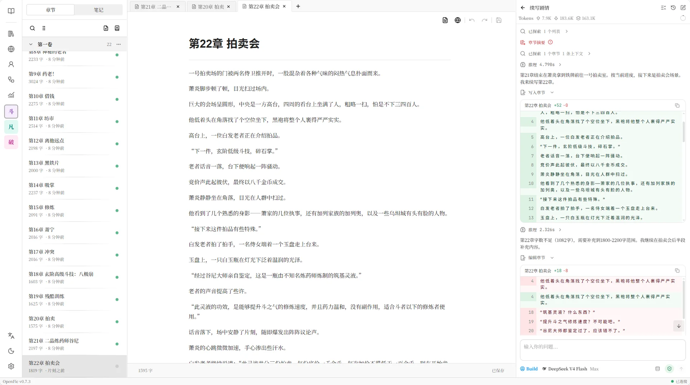

资料进入故事
正文、笔记、人物与世界书不再散落，让每一条设定成为可检索、可调用的创作上下文。
AI 不应只是隔着窗口回答问题。
它应当理解你的世界，记得故事走过的路，
并在你的许可下，真正参与创作。
正文、笔记、人物与世界书不再散落，让每一条设定成为可检索、可调用的创作上下文。
从规划、检索到修改章节，Agent 在明确权限与变更预览下完成真实任务。
摘要、索引和持续任务保存长篇上下文，让下一次协作接续而非重启。
OmniFic 围绕长篇创作的真实循环设计，让资料、写作、Agent 与记忆持续相互滋养。
GATHER
导入旧稿与资料，建立卷章、角色和世界观。
CREATE
在多标签编辑器里持续写作，自动保存每一次推进。
COLLABORATE
让 Agent 检索设定、续写章节，并清晰呈现工具调用。
REMEMBER
用摘要与索引维持长上下文，让故事继续向前。
从持久化任务目标，到子 Agent 检索、草稿审阅、变更预览与审批写入。点击任意步骤，可以检查每个阶段发生了什么。
萧炎的目光从玉盘上扫过，并未急着出价。
那股熟悉的药香极淡，却与药老方才描述的气息分毫不差。
他压下心中的波澜，指尖在袖中轻轻一扣，等待真正的竞价开始。
预览确认后才会写入章节；演示将在短暂停留后自动批准。
从文字本身到幕后运转的模型与 Agent，每一层都留给创作者掌控。
卷章结构、多标签编辑、自动保存、查找替换和自由排序，让数十万字依然清晰可控。
集中维护人物、地点、规则与研究资料，并让 Agent 随时检索。
读取、搜索和修改创作内容，支持审批、变更预览、子 Agent 与持续任务。
章节摘要、区间摘要、Embedding 检索与会话压缩，让故事不被上下文窗口截断。
复盘写作活跃度、字数来源、模型调用、Token 和延迟，让创作与 AI 协作过程可见。
章节树、沉浸式编辑器与 Agent 面板并肩展开。上下文、推理过程和每一处文本变更，都在同一个视野中。

项目正文与主要应用数据默认保存在本机 SQLite。模型供应商、提示词、工具权限与执行审批均由你配置。
无需把整部小说托管给一个陌生平台。
接入 OpenAI 兼容端点、中转站、Embedding 与 Rerank 模型。
用权限、审批和变更预览决定 Agent 能做什么。
使用云端模型时，发送的上下文仍会经过你配置的服务。
WITH GRATITUDE TO OPENFIC
OmniFic Fork 自 OpenFic v0.7.5。项目的基础架构、主要产品形态、世界观管理、写作编辑器、Agent Runtime 与本地数据能力，都建立在 OpenFic 的扎实工作之上。
OmniFic 在此基础上独立发展，但并非 OpenFic 的替代，也不代表一个“更正确”的方向。谨向原项目及贡献者致谢。
访问 OpenFic 原项目Windows 与 macOS 可以直接下载桌面包；也可以通过 PyPI 在浏览器中使用，或在 Linux 服务器与 NAS 上运行 Docker。
# PyPI · backend + browser frontend
$ python -m pip install --upgrade omnific
$ omnific version
$ omnific serve
# Open http://127.0.0.1:8000WRITE IN YOUR OWN DIRECTION
OmniFic 是一个仍在生长的开源项目。欢迎试用、讨论，也欢迎一起让它变得更好。